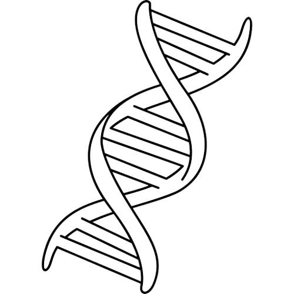
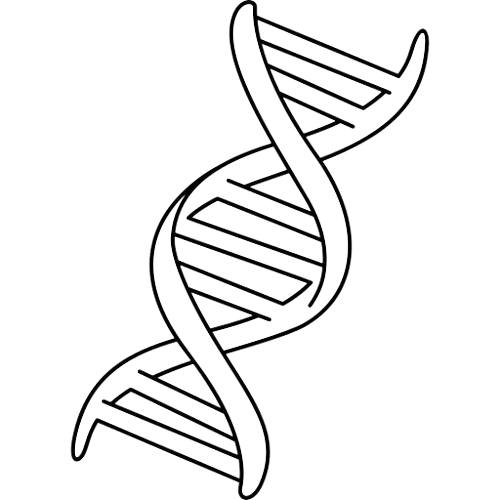

가온결의 시작
뇌졸중은 고령화로 인해 빠르게 증가하는 대표적 노인성 질환으로, 환자 수와 의료 복지 수요가 꾸준히 늘어나고 있다.
그러나 의료 인력과 재활 자원은 부족해 조기 재활과 체계적 관리가 중요하다.
상지 재활용 기기를 활용한 연구 결과, 근육 활성화가 마비 회복과 기능 개선에 효과적임이 확인되었으며, 가온결은 균형감각 회복, 상지 운동 기능 회복, 전반적인 삶의 질 향상 등 긍정적인 변화를 이끌어낼 수 있음을 확인할 수 있었다.

회복을 부르는 뇌의 힘
뇌 손상 시 다른 부위가 대신 기능하는 것
뇌신경-근육-감각 순서로 운동을 함
한쪽 손 마비-반대 손 사용으로 뇌를 자극하는 것
신경가소성
촉진
운동피드백
루프 재건
거울 뉴런
활성화
뇌 손상 시 반복적인 손 운동과 반대 손 사용, 거울 치료 등이 뇌 신경 경로를 자극해 기능 회복을 돕는다.
이 과정에서, 뇌는 신경 경로를 재구축하고 비활성화 된 영역을 활성화한다.
출처 : 보건복지부 2023 노인 뇌졸중 통계
가온결의 대표 제품인 손결이는 총 7단계의 프로세스를 제공합니다.
1
돌려돌려 핸들판
핸들을 돌리며 같은 방향으로 허리 좌우 스트레칭
2
오지마! 운동
앉아서 핸들을 밀며 바닥을 향해 상체 내려가기
3
불빛 반응 핸들 돌리기
불빛이 들어오는 방향으로 다리를 움직이며 핸들 돌리기
4
왼-오른-왼 패턴 돌리기
화면에서 제시된 방향 순서대로 핸들을 돌리기
5
약한 팔만 돌리기
마비 쪽 팔만 사용해 핸들 돌리기
6
부릉~가요 운동
한 발 앞으로 내딛으며 핸들 회전하기
7
2분간 일정 속도로 돌리기
일정한 속도를 유지하며 2분 동안 핸들 회전하기
뇌 자극에 따른 기능을 고려하여,
뇌를 자극하는 운동 프로세스를 제공합니다.
뇌를 자극하는 운동 프로세스를 제공합니다.
 


1차 운동 피질
감각 피질
시각 피질
진정계 + 소뇌 상호작용
운동 전피질
기저핵
더 나은
내일을 위한 작은 습관